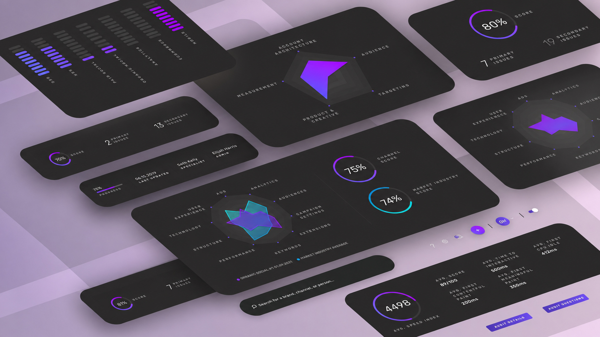

Case study
03
Digital Audit Experience
Kinesso (IPG) · Director, UX Design, Strategy & Innovation
DXA turned immense volumes of digital-performance data into a clearer audit workflow with benchmarks, recommendations, visualizations, and presentation-ready outputs.
Audit Workflow
Data Visualization
AI Insights
Red Dot
Indigo Awards
Explore the work

The Ask
Digital performance data needed to become something teams could understand and use.
- ChallengeBrands had an immense volume of digital data, but making it actionable across channels was complex.
- SolutionDXA offered audit software with AI-powered data visualization, benchmarks, and recommendations.
- ImpactThe work earned the 2021 Red Dot Award and five wins at the 2022 Indigo Design Awards.

Digital audit product
DXA made audit data legible enough to guide strategy.
In a digital age where data is abundant, making sense of it became increasingly complex. DXA was designed to convert digital-performance data into insight teams could act on.
- Audit clarityThe product helped teams evaluate digital performance across brands and channels.
- Insight layerAI-powered visualizations and recommendations turned complex metrics into clearer strategy.
- StorytellingThe workflow supported outputs that could be used in strategy and client conversations.

Results workflow
Audit results, benchmarks, and recommendations lived in one usable workflow.
DXA helped turn audit inputs into a product surface where teams could see performance, compare benchmarks, and move from data to recommendations.
- ResultsAudit outputs were presented as structured product information rather than raw data.
- BenchmarksTeams could compare performance and identify where brands needed attention.
- RecommendationsThe product connected audit findings to clearer next steps.
Audit Creation
The product made audit setup visible and structured.


User flow
Search, fill, and results became a repeatable path.
The experience connected audit creation, questionnaire progress, and final results into a flow teams could run and explain repeatedly.
Recognition
The outcome was recognized internationally.
- Red Dot 2021Winner for Brands & Communication Design. View proof.
- Indigo 2022Five wins: 2x Gold, 2x Silver, and 1x Bronze across digital design, tools, interaction, interface, and navigation categories.
- Awards videoI wrote and directed the awards submission video that helped explain the product story.
Audit data became a usable product story.Digital Audit Experience — Kinesso